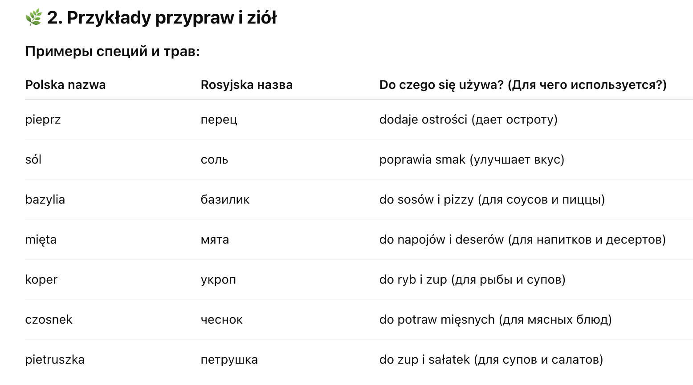

Przyroda > Swiat roślin > Przyprawy i zioła
Swiat roślin
🌿 Przyprawy i zioła
(Специи и травы)
🌱 1. Co to są przyprawy i zioła?
Что такое специи и травы?
- Przyprawy – to rośliny lub ich części, które dodajemy do jedzenia, żeby miało lepszy smak i zapach.
- Zioła – to rośliny, które często używamy nie tylko do jedzenia, ale też do zdrowia.

🍽️ 3. Dlaczego używamy przypraw i ziół?
-
Почему мы используем специи и травы?
- Nadają jedzeniu smak i zapach.
- Pomagają, żeby jedzenie było smaczniejsze.
- Niektóre zioła pomagają też w zdrowiu (np. mięta uspokaja żołądek).